I am an Embedded Systems Engineer and IoT Specialist with 20+ years of experience designing resilient, low-power, and secure digital systems.
My work spans medical devices, humanitarian technology, industrial IoT, renewable energy, and conservation, where reliability in extreme environments is critical.
I started in the hacker scene and open-source communities, co-founding Sukey to keep demonstrators safe and informed, contributing to initiatives like CryptopartyLondon and Open Source Ecology, and building civic media tools that empowered people to subvert the tools of alienation / empower themselves through their technology.That ethos of open, resilient, user-driven systems continues to drive my professional work today.
I bridge hardware, firmware, and cloud: from board bring-up and RTOS firmware on ARM Cortex-M and RISC-V MCUs, to embedded Linux integration, wireless connectivity, and device-to-cloud architectures.
I deliver systems that scale securely, update reliably, and stay online under pressure—whether in remote clinics, industrial sites, or field deployments with minimal infrastructure.
I hold a BEng with honors from Durham University and am a Member of the Institution of Engineering and Technology (MIET).
I speak English, French, and German, and continue to thrive at the intersection of hacker culture and professional engineering: solving hard problems, mentoring teams, and building embedded systems with measurable real-world impact.
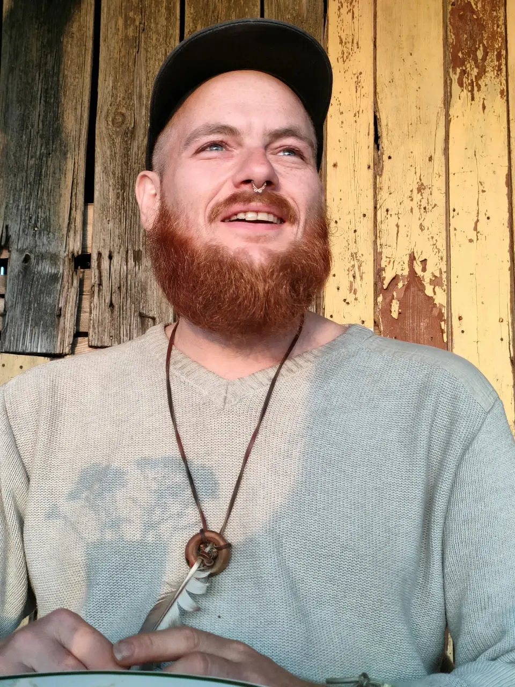
About Me
Services:

Embedded Systems & IoT Prototyping
Design and development of embedded software and hardware prototypes, including ARM Cortex-M, RISC-V, ESP32-S3/C5, RP2040, and nRF52/53 systems. Build secure, low-power, and resilient IoT solutions with OTA updates, real-time telemetry, and cloud connectivity.

Technical Consulting & Strategy
End-to-end guidance for embedded and IoT projects: hardware selection, board bring-up, firmware development, and cloud integration. Ensure scalable, secure, and field-ready systems for medical, industrial, and humanitarian deployments.

Web & App Development
Custom web and mobile applications built for reliability, security, and scalability. Explore my full portfolio at web.samthetechie.org.

DevOps, Automation & Cloud
Automate deployments, manage cloud infrastructure, and optimize performance for embedded, IoT, and web applications. Deliver reliable, secure, and scalable operations with Docker, Terraform, AWS, and GCP.
Recent Clients:
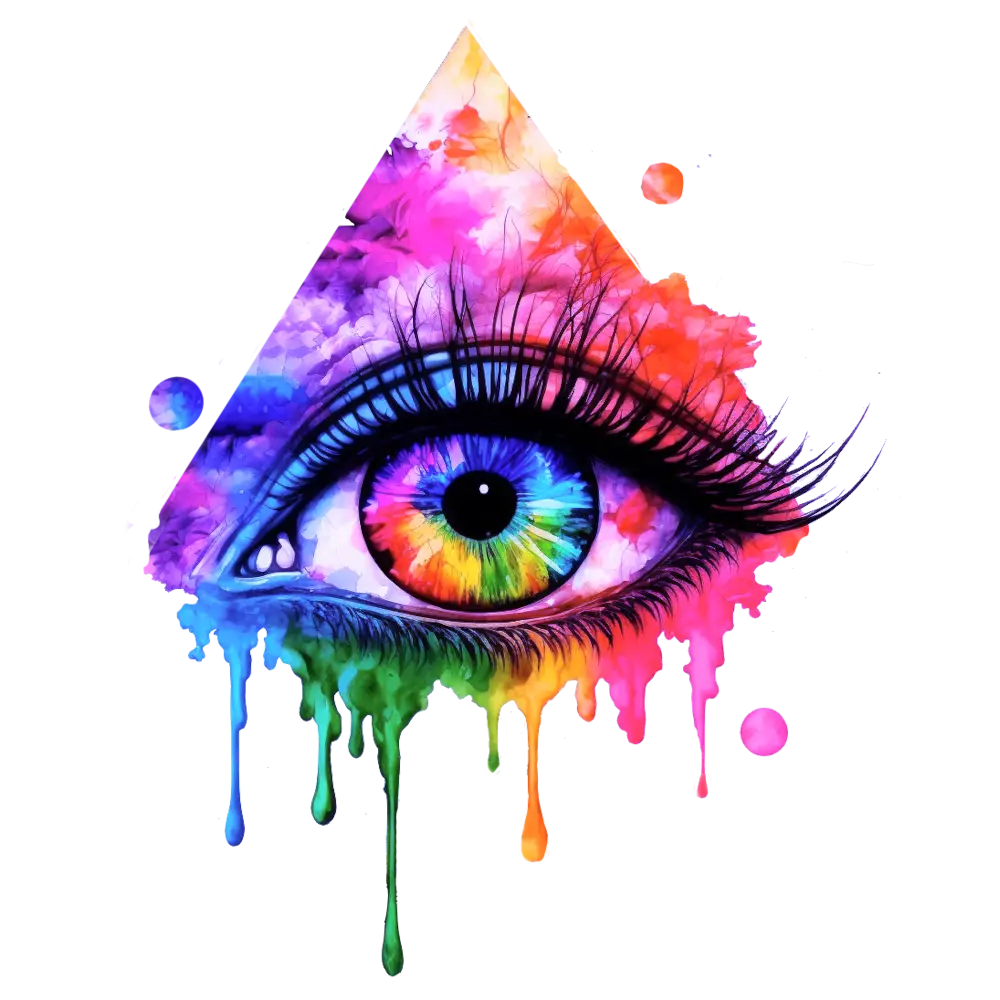
Colorful Psyche
Designer & Developer: Artist website built for beauty and control — custom front-end and deeply tailored WordPress theme. Balanced lightweight code with a high-impact visual aesthetic. Service Tier: Advanced.
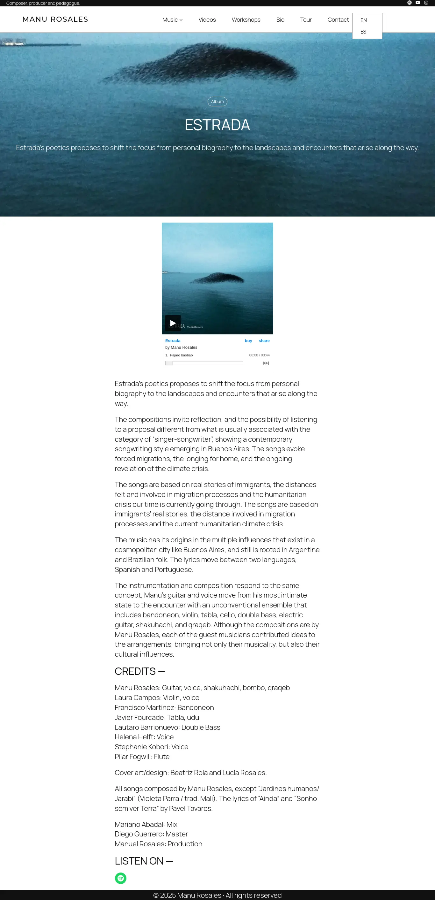
Manu Rosales
Site-Migrator: Migrated legacy site (static HTML) to modern WordPress block-layout with full training for client autonomy. Clean, simple UI to support self-directed updates. Service Tier: Basic.
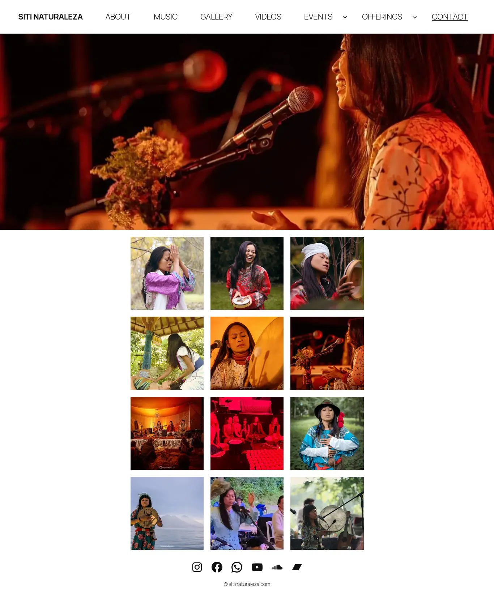
Siti Naturaleza
Designer & Developer: Designed a calming, ecommerce-enabled artist site. Built on WordPress with WooCommerce and natural aesthetics. Service Tier: Intermediate.
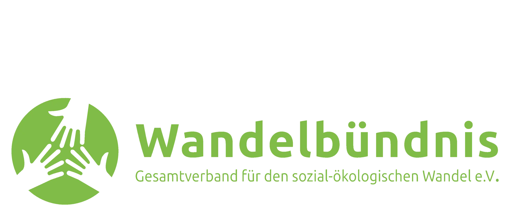
Wandelbündnis
Backend Engineer: Delivered secure backend API with Python for member data automation. Containerised deployment hardened for resilience and compliance. High-trust partner in organisational digital transformation.
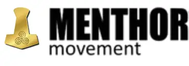
MenthorMovement
Full Stack Developer: Built a fully custom ecommerce platform for a progressive social entrepreneur. Designed, developed, and deployed both frontend and backend tailored precisely to the mission. Service Tier: Advanced.
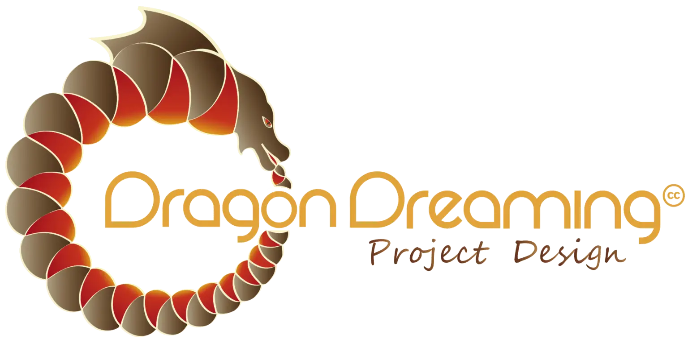
Dragon Dreaming Intl
Infrastructure Consultant: Provided infrastructure consulting and technical care for an international nonprofit’s site. Ensured uptime, supported upgrades, and acted as backend guardian for their remote team.
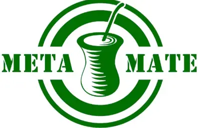
MetaMate
Coached the client to confidently manage their infrastructure. Provided on-demand security guidance and recovery support during experiments. Focused on education, not dependency.
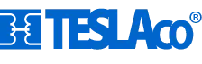
TeslaCo
Security Consultant: Restored business-critical operations after a bot abuse crisis. Hardened infrastructure, rebuilt ecommerce stack, launched new site and marketing campaign — full digital turnaround in weeks.
Projects:
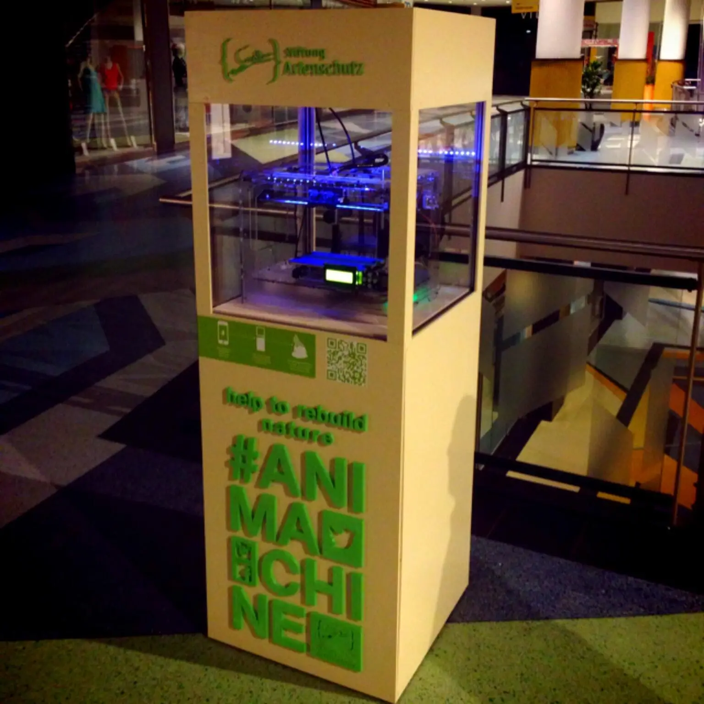

#Animachine
Lead Engineer: public installation — a Berlin-based system that 3D printed endangered animals layer-by-layer, controlled by social media hashtags — blending automation, ethical tech, and hardware integration for real-world impact. Turning hashtags into habitat.
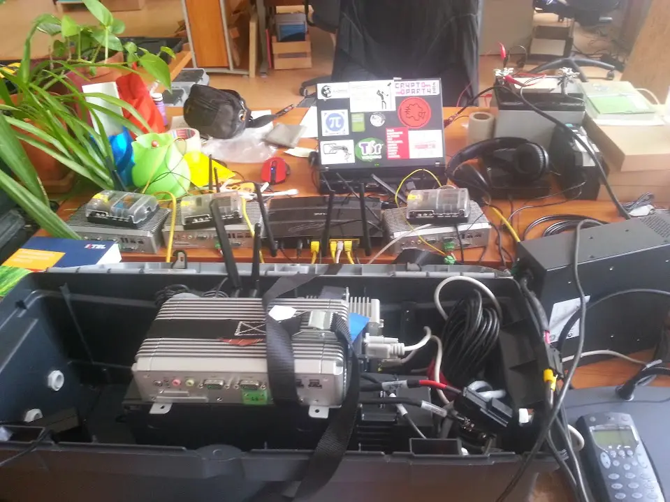
Electronic Medical Records
Lead Engineer: solar-powered EMR system for remote clinics around Lake Tanganyika. Designed for low-bandwidth, field reliability, and syncing via HF radio. Supported over 78,000 people.
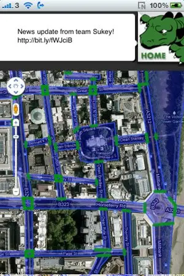
Sukey
Co-foundeder: real-time situational awareness tool for protest safety. Enabled crowd mobility during police kettling in London. Credited with preventing detainment at national demos.
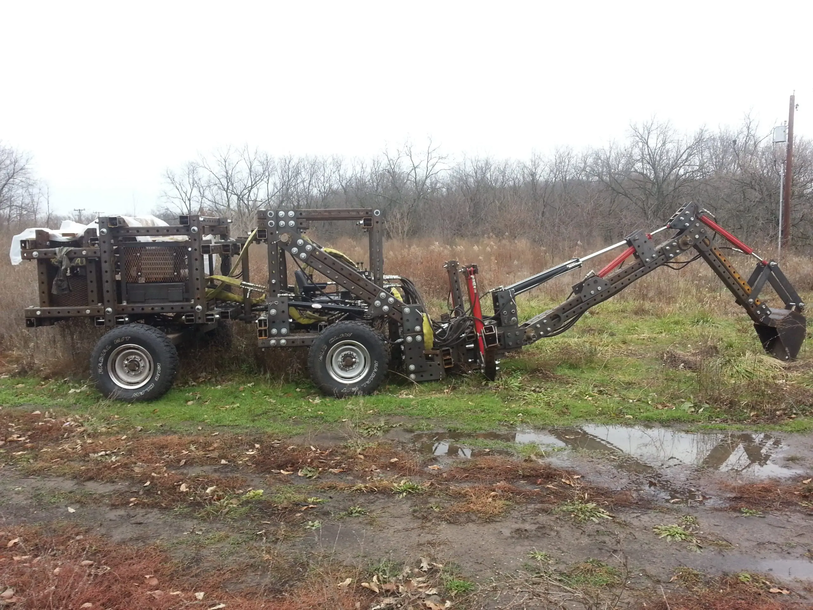
Open Source Ecology
Contributor: open hardware tools for resilient agriculture and off-grid industry. Designed and field-tested mechanical systems and electronics for collaborative, regenerative tech.
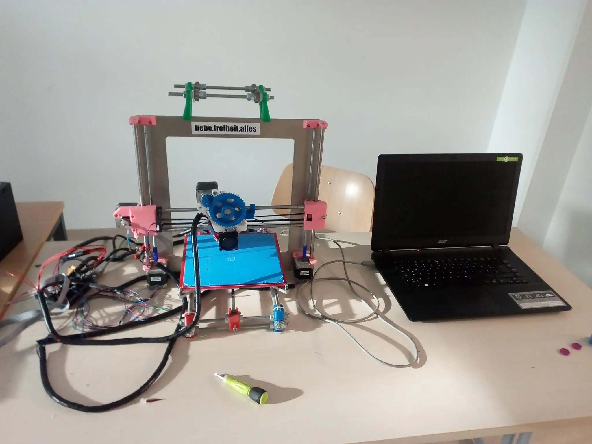
Reprap
Contributor: Built and modified multiple generations of Reprap printers. Designed custom parts, prototyped enclosures, and contributed to the maker ecosystem through hands-on engineering.
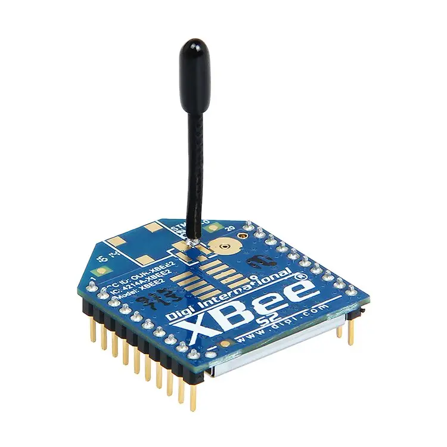
Building Banter
IoT Engineer: Designed a wireless sensor retrofit for legacy energy meters. Enabled real-time energy dialogue in factories. Deployed in operational plant — bridging human-computer interaction and sustainability.
Actions:
EcoVillage
Resident: Lived and worked in a permaculture forest village focused on ecological literacy, plant medicine, and regenerative design. Practiced voluntary simplicity, collective governance, and deep nature immersion.
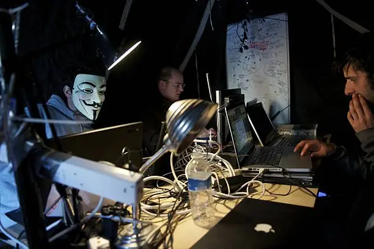
Occupy London: Tech Team
Tech Lead: founded and led the digital infrastructure team during the Occupy London movement. Delivered secure communications, public updates, livestreaming, and server resilience for a national organizing hub.
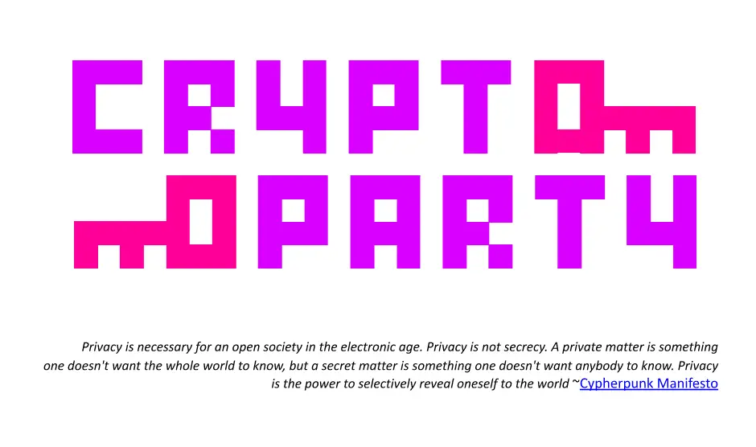
Cryptoparty London
Co-Organiser: Hosted free public workshops teaching end-to-end encryption, privacy tools, and operational security. Helped hundreds of attendees use PGP, Tor, OTR, and secure messengers.
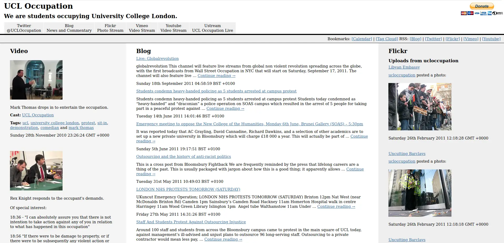
UCLOccupation
Tech Lead: founded the tech team supporting the 2010–2011 UCL student occupation, which became a national hub and a model for digitally enabled protest. Led server setup, web streaming, and secure comms infrastructure.
©Samuel Carlisle